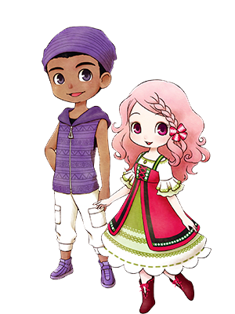
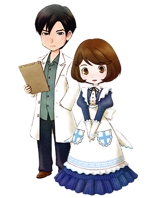

情敌事件
主人公与任何人都没有结婚和没有婚约，并与特定人物的好感度低的情况下发生。
结婚候补真正在意的对象是？
里克与卡莲
熟知彼此的青梅竹马，
第一阶段是两人谈论旅行未归的里克的父亲，
第二阶段是互相描述儿时的回忆。
事件发生条件
- 第一阶段
- 地点：泉
- 条件：与里克&卡莲的好感度未满10000
- 星期：三～六
- 天气：晴
- 时间：AM11:00～PM6:00
- 第二阶段
- 地点：伐木之家附近
- 条件：与里克&卡莲的好感度未满30000
- 星期：一、日
- 天气：晴
- 时间：AM11:00～PM6:00

凯与珀布莉
好奇心旺盛的珀布莉对凯积极的展开进攻，
第一阶段是凯提议去珀布莉家制作料理，
第二阶段是担心珀布莉的里克对凯的愤怒。
事件发生条件
- 第一阶段
- 地点：海边
- 条件：与凯&珀布莉的好感度未满10000
- 星期：日（夏季）
- 天气：晴
- 时间：PM2:00～PM4:00
- 第二阶段
- 地点：海边
- 条件：与凯&珀布莉的好感度未满30000
- 星期：三、四、六（夏季）
- 天气：晴
- 时间：AM9:00～PM7:00
克里夫与兰
性格相反的克里夫和兰，第一阶段是初次对话的两人，
第二阶段是兰照顾怕生的克里夫，渐渐缩短两人之间的距离。
事件发生条件
- 第一阶段
- 地点：旅馆2楼
- 条件：与克里夫&兰的好感度未满10000
- 星期：一~五、日（夏季以外的6～30日）
- 天气：-
- 时间：PM7:00～PM9:00
- 第二阶段
- 地点：教堂
- 条件：与克里夫&兰的好感度未满30000
- 星期：一~五、日（秋季以外）
- 天气：-
- 时间：AM11:00～PM4:00
格雷与玛丽
受伤的格雷受到了玛丽的治疗，被她的温柔所吸引了，
第一阶段发生后格雷的日程表会发生变动，周一以外都在图书馆度过。
事件发生条件
- 第一阶段
- 地点：铁匠铺
- 条件：与格雷&玛丽的好感度未满10000
- 星期：二~日
- 天气：-
- 时间：AM10:00～PM1:00
- 第二阶段
- 地点：图书馆1楼
- 条件：与格雷&玛丽的好感度未满30000
- 星期：二~日
- 天气：-
- 时间：PM1:50～PM4:00

多特与艾丽
一同工作的工作伙伴，第一阶段是迟钝的多特感受不到艾丽的心情。
第二阶段可见到检查艾丽的祖母时，多特表现出了作为医生的真诚态度。
事件发生条件
- 第一阶段
- 地点：医院1楼
- 条件：与多特&艾丽的好感度未满10000
- 星期：一、四~日
- 天气：-
- 时间：AM9:00～PM7:00
- 第二阶段
- 地点：爱莲家
- 条件：与多特&艾丽的好感度未满30000
- 星期：一
- 天气：-
- 时间：AM9:00～PM7:00